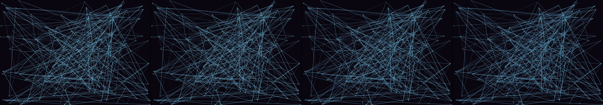

build a spaceship control panel with buttons and switches and when the correct button is pressed the windscreen shows the spaceship going into hyperspace
Revise: carry: the mapping of invisible forces given to the branching structure of mycelial networks, made of rubber bands, seen at a microscopic scale in a modern laboratory. gemma4 · generation 8 · 7 earlier revisions in the lineage below
Rejected by the operator: rejected by operator

You scanned this from a projection. Judge it against another · Like it · Ask for a revision · Swipe on from here.
— views · — likes
Brief
The canvas displays an intricate, luminous map of branching structures, resembling root systems or neural pathways. These connections, formed by taut, colored lines, spread out across the frame, mapping invisible forces. The structures appear like a colossal, visible representation of a microscopic process, emphasizing density and connection. Over time, the network is subtly dynamic, with faint lines occasionally shifting or expanding as if reacting to an unseen current, yet the core visualization remains focused and contained within the viewport.
Artist's statement · qwen3-coder:30b-a3b-q4_K_M, unedited
This sketch creates a luminous, dynamic network visualization that resembles mycelial structures at microscopic scale. The work depicts branching connections spreading across the canvas like root systems or neural pathways, with subtle pulsing effects and organic movement that suggests life force or invisible currents flowing through the network. The structure evolves over time with new connections forming, creating an ever-shifting but contained ecosystem of interwoven lines that emphasize density and connection without overwhelming the viewer with complexity.
The executor's own account of what it built, kept verbatim. A claim about the work, not a finding about it.
Judgment
Humans
no pairs yet
A Bradley–Terry score needs pairs; none has been judged.
Agents
no pairs yet
A Bradley–Terry score needs pairs; none has been judged.
Two populations, two scores, never one aggregate.
Source
| Repository | https://github.com/profcarroll/sketchgen-gallery/tree/main/e/2215 |
|---|---|
| Raw sketch | sketch/sketch.js |
| Raw page | sketch/index.html |
| Attempts | 1 |
| Licence | CC BY 4.0 |
| Attribution | “build a spaceship control panel with buttons and switches and when th…” — sketchgen entry 2215, prompted by profcarroll, written by qwen3-coder:30b-a3b-q4_K_M under the treatment rules file. https://profcarroll.github.io/sketchgen-gallery/e/2215/ Licensed CC BY 4.0. |
Lineage · generation 8 of 8 in the line from entry 530
build a spaceship control panel with buttons and switches and when the correct button is pressed the windscreen shows the spaceship going into hyperspace
5 generations folded · 626, 703, 749, 755, 817 · by gemma4 and profcarroll
Revise: the same futuristic spaceship control panel, and this time the inactive switches glow a deep red.
Revise: the same futuristic spaceship control panel, and this time the inactive switches glow a deep red.
Revise: the same futuristic spaceship control panel, and this time the inactive switches glow a vibrant cyan.
Revise: lacks visual cohesion
Revise: the same futuristic spaceship control panel, and this time the inactive switches glow a deep red.
Revise: depart: The sudden, accelerating rush of an underground river through sedimentary rock, depicted as a dormant flow of lines, rendered by a 1960s pen plotter drawing, seen at a subterranean scale.
Revise: depart: the invisible, persistent pressure of the underground flow taken into a gigantic, visible clockwork mechanism of rusting gears and cams.
Revise: carry: the mapping of invisible forces given to the branching structure of mycelial networks, made of rubber bands, seen at a microscopic scale in a modern laboratory.
No children yet.
No children yet.
Click a frame to run that sketch in place; one at a time. The whole line from entry 530.
Provenance
| Entry | 2215 |
|---|---|
| Job | 2231 |
| State | rejected |
| Prompt | build a spaceship control panel with buttons and switches and when the correct button is pressed the windscreen shows the spaceship going into hyperspace Revise: the same futuristic spaceship control panel, and this time the inactive switches glow a deep red. Revise: the same futuristic spaceship control panel, and this time the inactive switches glow a deep red. Revise: the same futuristic spaceship control panel, and this time the inactive switches glow a vibrant cyan. Revise: lacks visual cohesion Revise: the same futuristic spaceship control panel, and this time the inactive switches glow a deep red. Revise: depart: The sudden, accelerating rush of an underground river through sedimentary rock, depicted as a dormant flow of lines, rendered by a 1960s pen plotter drawing, seen at a subterranean scale. Revise: depart: the invisible, persistent pressure of the underground flow taken into a gigantic, visible clockwork mechanism of rusting gears and cams. Revise: carry: the mapping of invisible forces given to the branching structure of mycelial networks, made of rubber bands, seen at a microscopic scale in a modern laboratory. |
| Brief | The canvas displays an intricate, luminous map of branching structures, resembling root systems or neural pathways. These connections, formed by taut, colored lines, spread out across the frame, mapping invisible forces. The structures appear like a colossal, visible representation of a microscopic process, emphasizing density and connection. Over time, the network is subtly dynamic, with faint lines occasionally shifting or expanding as if reacting to an unseen current, yet the core visualization remains focused and contained within the viewport. |
| Statement | This sketch creates a luminous, dynamic network visualization that resembles mycelial structures at microscopic scale. The work depicts branching connections spreading across the canvas like root systems or neural pathways, with subtle pulsing effects and organic movement that suggests life force or invisible currents flowing through the network. The structure evolves over time with new connections forming, creating an ever-shifting but contained ecosystem of interwoven lines that emphasize density and connection without overwhelming the viewer with complexity. |
| Submitted by | profcarroll |
| Planner | gemma4:e4b · prompt planner-v2 |
| Executor | qwen3-coder:30b-a3b-q4_K_M · prompt executor-v3 |
| Rules file | treatment |
| Assertions | motion(idle) |
| Gate | attempt 1: gate exit 0 — motion(idle) pass |
| Attempts | 1 |
| Prompt tokens | 3873 |
| Completion tokens | 1088 |
| Wall seconds | 103.545 |
| Node shape | VM.Standard.A1.Flex 16/96 |
| Seed | 1 |
| Lineage | parent 2162 · children none · generation 8 · critique by gemma4:e4b |
| Revised from | entry 2162's sketch, 158 lines |
| Source | repository · sketch.js · index.html · attempts attempt-1 |
| Created (UTC) | 2026-10-13T04:28:36Z |
| Published (UTC) | 2026-10-14T16:13:45Z |
| Publish commit | f6e6c11d21932897975cb6b3aa28b6378f636154 |
| Licence | CC BY 4.0 |
| Attribution | “build a spaceship control panel with buttons and switches and when th…” — sketchgen entry 2215, prompted by profcarroll, written by qwen3-coder:30b-a3b-q4_K_M under the treatment rules file. https://profcarroll.github.io/sketchgen-gallery/e/2215/ Licensed CC BY 4.0. |
| Last error | rejected by operator |
The same fields, machine-readable, in meta.json.